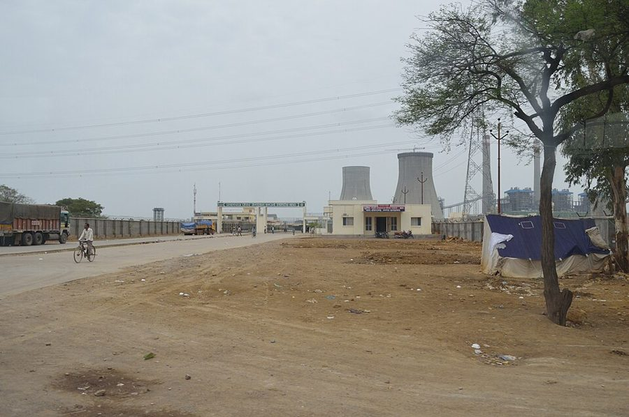
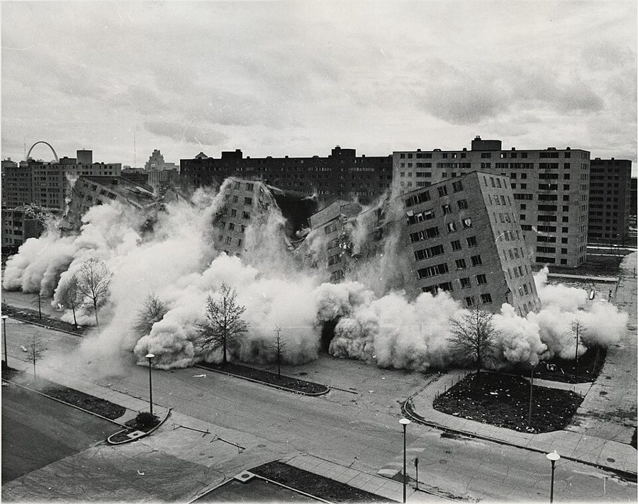

trimtab
… the trimtab; the miracle cure …
配平片
舵或机翼后缘上的一小块活动片，扳动它就能带动整个大舵。Buckminster Fuller 常拿它比喻一个人也能撬动大系统。
第 6 章是一张清单：想改变一个系统，可以从哪些地方下手，按作者的排序从弱到强排了 12 项，编号越小越有力。这一页是前半，第 12 到第 7 项：参数、缓冲器、存量流量结构、延迟、调节回路、增强回路。好玩在几个反直觉的判断：大家吵得最凶的税率、预算、换领导排在最末；实物的结构很要紧，却多半改不动；车开太快时，先松油门常常比换更灵的刹车有用。
第 4、5 章讲系统为什么总让人意外、哪些结构会把人困住。第 6 章转向怎么改：开头转述 Forrester 的两个判断立论，然后是清单。这一页是 §1 章首和第 12 到第 7 项，第 6 到第 1 项和收尾在 06b。这一页要用到的旧概念：存量和流量、调节回路和增强回路、延迟和振荡。
别被带歪：§1 说 Forrester 的城市模型当年被嘲笑，后来那批低收入住房项目在一个又一个城市被拆掉。拆是事实，但拆除多和维护没钱、空置、城市人口外流有关，算不上证明了「补贴住房越少城市越好」。
大家吵得最凶的税率、预算、换领导，为什么在她的清单上排在最末？
读的时候带着这几个问题，读完回来对照「检查一下理解」。
这一页是原书和译本第 6 章的前七节，一节就是清单上的一项。粗体是本站给的节名，后面是档和译本字数；下面一行是译本的小标题和这一节在译本电子书里开头的几个字，再下面是英文原书的小标题和开头几个词。读完打个勾。

先把这一页用到的几个概念用书外的例子讲一遍。缓冲器、存量流量结构、延迟三项沿用前面几页的概念，在分节地图里点过；这里讲清单本身和另外三项。
杠杆点是系统里一处小改动就能让行为大转变的地方。程序员见得多：一个服务慢，加机器、调线程数忙了一周，最后发现是一把锁让所有请求排队，改一行就好了。
她先转述 Forrester：身在系统里的人常能凭直觉猜到杠杆点在哪，可多半（more often than not）往错的方向推；他形容复杂系统的词是「违反直觉」（counterintuitive）。她自己接着解释：简单的存量和流量一层层连起来，就复杂到算不清，所以杠杆点常常不在直觉指的地方，指对了也常被推反。她自己的例子是 Forrester 的世界模型：模型找出的杠杆点是增长，各国领导人盯住增长没盯错，只是拼尽全力往反方向推。
清单上「高」指编号小：第 1 项最有力，第 12 项最弱。

在这一页：§1 立论，后面六节各讲一项。每读一项，问两句：这一处改了作用有多大？改起来有多难？
参数是流量有多大、阀门开多少：税率、最低工资、预算、限速，到程序里的超时时间、连接池上限。她说换人也算这一档：换一双手去拧同一个龙头，龙头还是那个龙头，管子、信息、目标、规则都没变，系统的行为就变不了多少。
参数最常被调、被吵，因为它直接落在每个人身上；她说短期里、对正站在流量里的人，它可能很要紧，但它很少（rarely）改变整个国家经济的行为。一个服务老超时，把超时从 3 秒调到 5 秒，报警少了，慢的原因还在。
例外是关键参数：参数落进会触发清单上更高一项的区间时，才成为杠杆点，比如利率、出生率，管的是增强回路转一圈放大多少。她紧接着说，这种关键数字远不如人们以为的常见。
在这一页：§2 前半是一串参数的例子，后半是关键参数这个例外，最后用房东定租金的故事说：多数数字不值得那么较真。
一条调节回路要有三样：目标、发现偏差的监测装置、纠偏的手段。力度看三样合起来：测得准不准、快不快，反应快不快、猛不猛，纠偏的流量够不够大。
力度是相对的，要拿它和它要纠正的冲击比。冬天关着窗，暖气够用；窗户全打开，同一台暖气就顶不住。线上服务的自动扩容平时够用，一次活动把流量拉高十倍就不够了。冲击变大，回路也得跟着加强。
还有一类备而不用的回路：平时不动，关键时刻才起作用，像核电站的应急冷却、人的出汗和打寒战。她说常犯的一个大错，是因为它们不常用、看着费钱就砍掉：短期看不出影响，长期让系统活得下去的条件范围大大变窄。
在这一页：§6 先讲回路的三样和力度，再拿市场和民主当例子，最后列一串加强调节回路的做法。
增益是增强回路转一圈放大多少：利率、出生率、一个病人平均传染几个人。这里的 gain 是放大的倍数，和赚钱无关。
她说减小增强回路的增益，也就是放慢增长，通常（usually）比加强调节回路更有力，也比任由它跑下去好得多。她的比方：车开得太快，先松油门，而不是指望更灵的刹车。理由是那些调节回路（技术、市场、各种适应）都有极限、有延迟，放慢增长给它们留出起作用的时间。这和第 9 项连着：延迟多半改不动，放慢变化常常更容易。
在这一页：§7 先列一串增强回路（流感、存款、水土流失、核裂变），再讲「富者愈富」：累进税、遗产税是去削弱增强回路。
读英文原书时值得停一下的词和句：熟词生义、Meadows 的口语和比喻。灰色斜体是原句里连续的几个词，在英文电子书里搜它就能找到；标「每个字都认识」的，是每个词都眼熟、合起来意思却变了的，最容易读错。点「记下」收进词本。
对着译本读这七节时，下面这些地方会把人读歪。方框里是译本的原句，在译本电子书里搜它就能找到；灰色斜体是英文原书那一处。只收意思错了、反了、漏了的，措辞上的出入不收。这一章译反的地方特别多，有几处会让人读出和原文相反的主张。全书的勘误汇总在译本勘误。
… Lawrence Malkin, International Herald Tribune, 1992
译本：「《国际先驱导报》，1992」
International Herald Tribune 通译《国际先驱论坛报》，是一份英文报纸，译本的报名对不上。
… we typically don’t count the costs …
译本：「特别是一些我们无法计算的成本」
原文：增长有好处也有成本，我们通常不去算成本，而这些成本恰恰是贫穷、饥荒、环境破坏，正是我们想靠增长解决的那串问题。说成「算不出」，就丢了这层讽刺：问题出在不算，不在算不了。
… are correctly fixated on economic growth …
译本：「也都将经济增长作为解决各种问题的答案」
原文有 correctly：领导人盯住增长这个杠杆点，盯对了，只是拼命往反方向推。丢了这个词，就成了单纯批评盯着增长，「找对了杠杆点却推反了」这一章的主旋律没了。
… those projects have been torn down …
译本：「城市一个接一个地没落了」
原文：此后很多这样的低收入住房项目在一个又一个城市被拆掉了。说的是房子被拆，不是推行补贴的城市衰落。
… The rate at which the hole deepens …
译本：「这个“大窟窿”的深度被称为年度财政赤字」
国债是窟窿本身，是存量；年度赤字是窟窿每年加深多少，是流量。译本把赤字说成「深度」，正好把这本书最基本的存量和流量弄混了。
… but I’m getting ahead of myself …
译本：「但这几乎难以实现」
原文：改变那个政治系统里钱的流法，会带来大得多的不同，不过这是清单后面的事了。「难以实现，因为换成谁都会让自己先获益」原文没有，「国家财政系统」也是译本换的，原文说的是总统所在的政治系统。
… Probably 90—no 95, no 99 percent …
译本：「大多数人会把90%的注意力都集中在参数上」
原文是「大概九成，不，九成五，不，九成九」的注意力，说的是「我们」，一句话里自己改口两次，意思是注意力几乎全在参数上。译本只留了 90%。
… The Fed’s fiddling with the interest rate …
译本：「美国联邦政府无论如何调整利率」
the Fed 是美国联邦储备系统，也就是美国的央行，和联邦政府是两回事。同一段的竞选捐款那句，原文是「政治还是干净不了」。
… Parameters become leverage points when they go …
译本：「只有当我们实在找不到其他11个因素时」
原文：参数落进会触发清单上更高一项的区间时，才成为杠杆点。例子是利率、出生率，它们管着增强回路的增益；系统的目标也是能造成大不同的参数。这是判断一个数值不值得争的标准，译本换成了「别的都找不到时才用」。
… not nearly as common as people …
译本：「大多数系统都会受到这些关键参数的影响」
原文：这类关键数字远不如人们以为的常见；大多数系统经过演化或设计，都离关键参数的区间远远的；多数数字不值得为它流那么多汗。译本说成大多数系统都受关键参数影响，正好反了。
… not easily fixed by pollution control devices …
译本：「该国曾经采取过多项控制污染」
原文只说：路网让所有车都穿过布达佩斯，由此带来的污染和拥堵，不是装净化装置、红绿灯、限速就容易解决的。译本写成匈牙利试过这些措施、都没效果，多出了一段史实。
… the lifetime of destructive CFC molecules …
译本：「远远超出了污染物被清除的速度」
原文并列三件同样改不动的事：氟利昂分子在臭氧层里的寿命，污染物从含水层里被冲掉的速度，低效的车队要十到二十年才换完。译本把它们拼成了一句因果，像是车队换得慢才跟不上清除污染，读不通。
… the time it takes for a price …
译本：「从产品价格调整，到其供需不平衡之间」
原文：价格要花多久，才能根据供需失衡调整过来。先失衡、后调价，延迟在价格这一头。译本的顺序反了，像是价格先动、失衡在后。
… in a feedback process is critical …
译本：「将对存量变化的速度产生重要影响」
原文：反馈里的延迟是否要紧，要拿它和回路想控制的那个存量变化得多快相比。这一项的要点就是「相对」，本节英文小标题也是这个意思。译本说成延迟影响存量变化的速度，要点丢了。
… I would list delay length as …
译本：「我将时间延迟的长度列为一个高杠杆点」
原文是虚拟语气：要不是延迟通常不好改，我会把它列为高杠杆点。所以它排在第 9。译本说成她把它列为高杠杆点，和清单上的位置对不上。
… humans invent them as controls …
译本：「人体也能精妙地调控自身」
原文：调节回路有的是自然演化出来的，有的是人发明出来当控制手段的，恒温器就是。译本换成了人体的自我调节，接下来恒温器那个例子就接不上了。
… leverage here is to keep them …
译本：「真正的杠杆其实是顺其自然，不要干预」
原文：真正的杠杆是不让公司和政府用补贴、税收扭曲价格信号，所以才需要反垄断法、广告真实法、污染费、取消不当补贴。译本把这些法律说成要避免的干预，她的主张整个反了。
… Billions of dollars are spent to limit …
译本：「以防止信息的偏差」
原文：有人花几十亿美元去限制、扭曲、垄断选民和领导人之间的信息流。译本说成国家花钱防止偏差，正好反了；同段「信息的传播者成了有私利的一方」也译偏了。
… Reducing the gain around a reinforcing loop …
译本：「减少增强回路的产出成果」
gain 是增强回路转一圈放大多少，像利率、出生率。本节小标题的「收益」、这里的「产出成果」，都会让人以为在讲赚钱。减小增益就是放慢增长。
… the more you have the possibility …
译本：「越深入，通常收获也会越大」
原文这半句是在给增强回路下定义：凡是某样东西有得越多、就越有可能有更多的地方，都去找杠杆点。译本换成了一句「挖得越深收获越大」，找增强回路的线索没了。
下面是作者在这七节里的主张，本站按主张之间的逻辑重排，不按清单顺序；每条后面是节号，拿不准就回书里那一节再读一遍。
这是她转述的 Forrester：身在系统里的人凭直觉常知道杠杆点在哪，但多半推反了方向。她的例子是 Forrester 的两个模型：世界模型说要放慢增长，领导人却拼命加速；城市模型说低收入住房补贴越少越好，当时被嘲笑。她说自己也没有又快又容易的公式，得花几个月几年去摸；清单只是邀请人想得更宽。
§1参数吸走我们大概九成以上的注意力，却很少改变国家经济这类系统的行为：停滞的很少能拉起来，乱跳的一般稳不住，失控的也慢不下来。换人也只是换一双手拧同一个龙头。参数只有落进触发更高一项的区间才成杠杆点，她说这种关键数字远不如人们以为的常见。
§2Numbers, the sizes of flows, are dead last on my list of powerful interventions.— §2。本站译：数字，也就是流量的大小，在我列的有力干预里排在最末。
缓冲器大了稳，太大就僵、就贵，改它有时有奇效，可它多是实物；结构建好以后只能重建，所以杠杆在一开始的设计；延迟她本想排高，只因为通常不好改才排第 9。三项排得低，理由都是难改，不是不重要。
§3 §4 §5力度看监测、反应、纠偏流量合起来，而且要和它要纠正的冲击比：冲击变大，回路也得加强。应急的回路平时不动，砍掉它们短期看不出来，长期让系统能活的条件变窄。市场是她举的例子：价格越清晰真实越好，所以要防止有人扭曲它。
§6延迟改不动时，通常更容易的是放慢变化的速度，让难免的延迟少惹麻烦；所以在 Forrester 的世界模型里，放慢经济增长比加快技术进步、放开价格更有杠杆。减小增强回路的增益，通常比加强调节回路更有力。
§5 §7Reducing the gain around a reinforcing loop—slowing the growth—is usually a more powerful leverage point in systems than strengthening balancing loops— §7。本站译：减小增强回路的增益，也就是放慢增长，在系统里通常是比加强调节回路更有力的杠杆点。
合起来：清单的低端有个共同点：要么改了不太管用（参数），要么管用却改不动（缓冲器、结构、延迟）。她给的出路是在改不动的东西旁边下手：放慢变化，留住备用的刹车。从第 8 项起转向信息和控制，杠杆更大，06b 接着讲。
处境是本站编的，放在你可能遇到的地方。先自己想，再点开看分析；有的题不只一个答案。「第几项」照她的清单，编号越小越有力。全书的情境题汇总在情境题。
一家公司自建机房，服务器从下单到上架要三个月。用户量涨得快，大多是老用户拉来的新用户，于是机器一会儿不够、服务卡顿，一会儿又囤了一堆闲着。会上有三个提议：甲，换供应商，把交货期缩到一个月；乙，每次少买一点、多买几次；丙，先放慢拉新，按机器到货的节奏放量。
三个提议各在清单的第几项？按她的说法，哪个最现实？
甲缩短的是反馈里的延迟，第 9 项。真能缩到一个月当然有用，但她说延迟通常不好改，供应链往往不由你定。乙只改了每次采购的量，是参数，第 12 项，延迟还在，不够和过剩照样来回摆。丙放慢的是「老用户拉新用户」那条增强回路，第 7 项，正是她说的：延迟改不动时，放慢变化更容易。
容易错的是把乙当成解法：批量小了，订单更勤，但每一单还是三个月后才到。丙的代价是少长一些用户，要和卡顿的代价比。实际常是丙先顶着，同时去谈甲。
书里对应：§5 时间延迟、§7 增强回路
一个记账 App 做了一次投放，带来 1000 个新用户。每个新用户邀请朋友注册，双方各得 5 元；统计下来，平均每个新用户带来 0.6 个新用户，被带来的人也照样邀请。运营想把奖励提到 50 元，估计每人能带来 1.1 个。
奖励金额是第几项？算一下两种情况下这 1000 人最后能滚出多少用户。这个数为什么值得争？
奖励金额是参数，第 12 项。5 元时，第二轮 600 人，第三轮 360 人，越来越少，加起来最多再多 1500 人，总共约 2500 人就停了。50 元时每人带来 1.1 个，每一轮比上一轮多，会一直涨，直到身边能拉的人拉得差不多，或者预算撑不住。
这就是 §2 的例外：这个参数管的正是增强回路的增益，1 左右是分界，从 0.6 推到 1.1，回路从慢慢熄灭变成越滚越大。所以它值得争。如果奖励再高也只能把 0.6 推到 0.7，那它就只是一个普通参数。
书里对应：§2 数字：包括各种常数和参数
一家电商每年大促，零点那几分钟下单量是平时的二十倍，所有地区的订单都写进同一个中心数据库，年年被打爆。三个提议：甲，把数据库连接池的上限从 500 调到 2000；乙，在下单和写库之间加一个消息队列，先收下订单再慢慢写；丙，把架构改成按地区分库，订单不再都挤进一个库。
三个提议各在第几项？哪个见效最快，哪个最根本？
甲是参数，第 12 项，连接池只是阀门开多大；数据库本身扛不住时，开大阀门可能让它倒得更快。乙加的是一个起稳定作用的存量，第 11 项缓冲器，让进和出暂时脱钩，见效快，代价是用户要等订单确认。丙改的是管子怎么连，第 10 项存量流量结构，最根本，也最慢最贵，正如她说的，结构建好以后只能重建。
按她的排序丙更高，但这一档她说杠杆在一开始的设计：如果系统还小，早拆早省事。已经大了，常见的做法是今年先上乙，同时排期做丙。
书里对应：§3 缓冲器、§4 存量—流量结构
一个团队嫌回滚演练、灰度发布太费时间，备用机房一年到头用不上还要付钱，季度预算一紧，三样都砍了。头三个月相安无事，发布还快了。第四个月一次有问题的发布直接推到全量，回滚脚本半年没跑过、跑不通，全站挂了两个小时。
砍掉的这三样，在清单上属于哪一项？为什么头三个月看不出问题？
主要是第 8 项里那类平时不用的应急回路：灰度发布是发现偏差的监测装置，回滚是纠偏的手段，平时都不怎么动，出事时才起作用。她说的大错就是这样：因为不常用、看着费钱就砍掉，短期看不出影响，系统能扛住的情形却少了一大块。
备用机房也可以看成第 11 项的缓冲器，一块冗余的容量。分法是看它起什么作用：多蓄着的容量是缓冲器；一旦出事就自动接手、把系统拉回正常，那就是一条应急的调节回路。这里三样合起来，丢掉的是系统自我纠正的能力。
书里对应：§6 调节回路：试图修正外界影响的反馈力量
Meadows 1993 年写成初稿，书 2008 年出版。下面挑出这一页里能被后来的事情检验的说法，分「书里 / 当时 / 今天」几栏，并给一个结论。结论判的是标题里「书里的说法：」后面那一句。全书的这一节汇总在今天怎么看。
读完作者的主张，再看它站不站得住。每一块摆出三样：主流怎么看，作者怎么看，本站的评论。最后一句是本站对这一页的总体判断。
主流看法：这张清单 1997 年先以九项的短文登在 Whole Earth 杂志上，1999 年扩成 12 项。它在可持续发展研究里被大量引用；Abson 等人 2017 年在 Ambio 上撰文说，可持续方面的努力多半落在「摸得着但弱」的杠杆点上，并把清单归成几大类。
作者的看法：清单是在制品，不是配方；缓冲器、结构、延迟排得低，主要因为难改。§1 §3 §4 §5
本站的评论：排序里混着两件事：改了以后作用多大，改起来有多难。延迟「本想排高」、因为难改才排第 9，就是证据。用的时候把两句分开问：这一处改了会不会改变系统的行为？我改得动吗？「第几项」是她几十年的经验判断，拿来启发很好，别当成定律去套。
主流看法：经济学教科书讲外部性：污染这类成本没进价格，就用税或收费把它算进去（庇古税）；反垄断、取消扭曲性补贴也是主流主张。国际货币基金组织估算，2022 年全球化石燃料补贴约 7 万亿美元，八成多是没把环境成本算进价格的「隐性补贴」。
作者的看法：市场是被许多经济学家「几乎奉若神明」的调节回路，价格越清晰、及时、真实越好；真正的杠杆是不让公司和政府扭曲它，所以要反垄断法、广告真实法、污染费。§6
本站的评论：这几条和主流经济学几乎一致，「奉若神明」的口气把分歧说大了。读译本的人要留神：这一段译反了，照译本读会以为她反对这些法律。她接着把民主也说成一条正在变弱的调节回路，那是 1990 年代的立场，不是这一项的论证。
主流看法：圣路易斯的 Pruitt–Igoe 1972 年起分批爆破；美国住房和城市发展部的汇总说，1993—2010 年 HOPE VI 计划又拆了约 9.9 万套公共住房。常被提到的原因有几样：联邦出钱盖楼，维护却靠租金，空置越多钱越少；城市人口外流；种族隔离。《城市动力学》当年就被批评结论靠模型的设定，很少拿实际数据检验。
作者的看法：Forrester 的模型说低收入住房补贴越少，城市越好，连城里的低收入者也是；当年被嘲笑，后来这类项目一个城市接一个城市被拆掉。§1
本站的评论：拆楼是事实，但证明不了模型：楼可以因为维护的钱断了而被拆，不必是因为城里低收入住房太多。这正好也是这一章的提醒：一个反直觉的结论碰上一件看上去对得上的事，更要问还有什么别的解释。
本站的总体看法：这一页的道理大体站得住：参数常被高估，实物结构难改，延迟改不动时放慢变化更现实，工程和政策里都看得到。要打折扣的是两处：排序是经验判断，混着「多有用」和「多好改」；城市模型和几处政治判断是那个年代、那一派的立场，书里的证据撑不到那么远。
先在心里答，再点开。答错的那题，回书里把对应那一节再读一遍。
猜到了位置，却多半往反方向推。世界模型找出的杠杆点是增长，要的是放慢，各国领导人却拼命加速增长。
参数吸走了大部分注意力，却很少改变系统的行为。只有当它落进会触发清单上更高一项的区间时才成为杠杆点，比如利率、出生率管着增强回路的增益；她说这种情形远不如人们以为的常见。
换人算参数，第 12 项：换一双手拧同一个龙头。如果新人改了谁看得到什么信息、改了规则或目标，那改的就是清单上更高的项了。
因为难改。缓冲器多是实物，比如土壤里中和酸的钙、大坝的库容；结构建好以后只能重建。她说结构的杠杆在一开始的设计，建成以后在于摸清瓶颈、别让它超负荷。
太短会反应过度，振荡被放大；太长会有衰减、持续或越来越大的振荡，系统有临界点时还会过冲和崩溃。改不动延迟，就放慢变化的速度，让延迟少惹麻烦。
暖气纠偏的力量敌不过开窗带来的降温。调节回路的力度是相对的，要和它要纠正的冲击比；冲击变大，回路也得加强。
减小增强回路的增益（放慢增长），通常比加强调节回路更有力：调节回路都有极限和延迟，放慢增长给它们留出起作用的时间。
用一句话说这一页：
想一想：你最近争过的一个数（预算、截止日期、KPI 的阈值、房租、孩子的补习时长），它会把系统推进一个不同的状态吗？还是在泰坦尼克号上挪躺椅？如果是后者，它背后哪一项更值得动？
读过又忘了，从这里想起来。挑的是这一页最值得记住的例子和说法，不按原书顺序；每条后面是节号，想细看就回书里那一节。全书各页的这一节都收在全书回顾。
一句话：最常被争的数字最弱，实物结构要紧却难改；改不动延迟就放慢变化，松油门通常胜过加刹车。
Forrester 的世界模型找出的杠杆点是增长。她说各国领导人盯住增长没盯错，只是拼命往反方向推：该放慢，却在加速。
§1数字排在清单最末。她估计九成，不，九成九的注意力都在参数上；参数只有落进触发更高一项的区间才是杠杆点，这种时候不多。
§2几十年最严的空气标准，空气没那么脏了，但不干净。到 2025 年，洛杉矶仍是全美臭氧污染最重的都市区。
§2存量相对流量越大越稳；缓冲器太大又僵又贵，而且多是实物，难改，所以排第 11。
§3调节回路的力度要和冲击比。平时用不上的应急回路，砍了短期看不出，长期让系统能活的范围变窄。
§6延迟改不动，就放慢变化。减小增强回路的增益，通常比造更灵的刹车更有力。
§5 §7